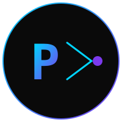

Unified proxy/gateway: AI Gateway + MCP Gateway + CDN cache + Agent-to-Agent protocol
Stream proxy to LiteLLM/OpenAI/Anthropic with hook injection. OpenAI-compatible API on /v1/chat/completions.
Unix socket proxy to Python sidecar for tool execution. Zero-copy framed protocol.
Two-tier cache: moka memory + blake3 filesystem. NATS invalidation. SIMD-optimized hashing.
Google Agent-to-Agent: agent cards, task lifecycle, message streaming. Self-hosted, self-managed.
Agent-to-Consumer: human-facing chat API with tool use. First-class agent support.
Live network visualization with sparklines. Keyboard navigation. Zero-alloc rendering.
| Endpoint | Method | Description |
|---|---|---|
/healthz |
GET | Health check |
/v1/chat/completions |
POST | OpenAI-compatible chat |
/a2c/chat |
POST | Agent-to-Consumer chat |
/.well-known/agent.json |
GET | A2A agent card |
/a2a/tasks |
POST | Create A2A task |
/events |
GET | Recent events |
/events/stream |
GET | SSE event stream |
/hooks |
GET | List hooks |
/ci/status |
GET | CI status JSON |
/ci/badge |
GET | SVG badge |
/ci/webhook |
POST | GitHub webhook |
/metrics |
GET | Prometheus metrics |
# Install
cargo install portail
# Run with defaults (AI gateway on :8787)
portail serve
# Launch interactive TUI dashboard
portail
# Check CI status
curl https://portail.vaked.dev/ci/status
# Get CI badge
curl https://portail.vaked.dev/ci/badge > badge.svgKernel-level observability. Trace syscalls, measure network latency, monitor scheduler — all without modifying application code.
Async I/O engine (Linux 5.1+). Single syscall for batch submissions, zero-copy reads, reduced context switches.
Kernel bypass for extreme performance. Direct NIC access via Poll Mode Driver. Requires dedicated NIC + hugepages.
Low-level HTTP engine. Direct control over HTTP/2 settings, connection pooling, flow control. Skip axum overhead.
┌─────────────────────────────────────────────────────────────┐ │ portail binary │ │ │ │ ┌──────────┐ ┌──────────┐ ┌──────────┐ ┌──────────┐ │ │ │ proxy │ │ cdn │ │ events │ │ hooks │ │ │ │ (axum) │ │ (moka) │ │ (ring) │ │ (inject)│ │ │ └─────┬─────┘ └────┬─────┘ └────┬─────┘ └────┬─────┘ │ │ │ │ │ │ │ │ ┌─────┴──────────────┴──────────────┴──────────────┴─────┐ │ │ │ AppState (shared) │ │ │ └────────────────────────────────────────────────────────┘ │ │ │ │ ┌──────────┐ ┌──────────┐ ┌──────────┐ ┌──────────┐ │ │ │ sentinel │ │ mcp │ │ a2a │ │ a2c │ │ │ │ (health) │ │ (sidecar)│ │ (agent) │ │ (chat) │ │ │ └──────────┘ └──────────┘ └──────────┘ └──────────┘ │ │ │ │ ┌──────────┐ ┌──────────┐ ┌──────────┐ ┌──────────┐ │ │ │ ci │ │ nullclaw│ │ godfather│ │ discovery│ │ │ │ (webhook)│ │ (heartbeat│ │ (monitor)│ │ (network)│ │ │ └──────────┘ └──────────┘ └──────────┘ └──────────┘ │ └─────────────────────────────────────────────────────────────┘